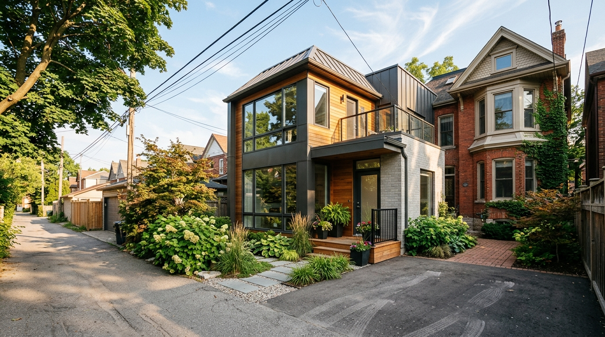
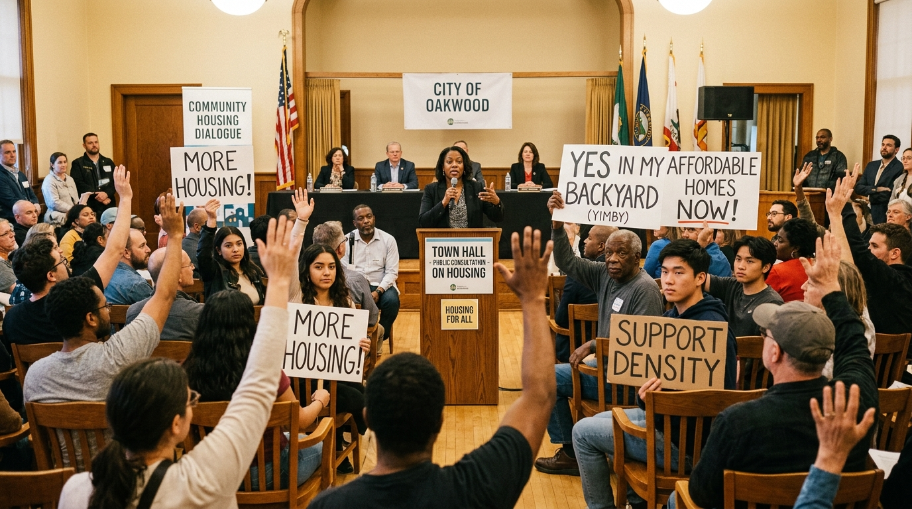

The Affordability Crisis
In Toronto, as in many large North American cities, finding affordable housing has become increasingly difficult. By 2023, the average rent for a one-bedroom apartment reached $2,592, representing a 13% increase from the previous year. With incredibly low vacancy rates and record levels of homelessness, the need for systemic change became impossible to ignore.
Historically, restrictive zoning laws limited how many houses could be built on available land, exacerbating the shortage. Grassroots groups began pushing for reform to unlock more housing options within existing neighborhoods.
New Housing Policy & Legislation
The Ontario government and the City of Toronto have introduced several key pieces of legislation and initiatives to tackle this shortage:
- Bill 23 (More Homes Built Faster Act): Passed in 2022, this act aims to increase supply by allowing up to three units on most residential lots without the need for rezoning, while also cutting development fees and reducing bureaucracy.
- EHON (Expanding Housing Options in Neighbourhoods): An initiative that allowed apartments up to six stories on major streets and loosened restrictions for multi-plexes (up to 4 or 6 units) in residential areas.
Expanding the "Missing Middle"
Toronto's reforms have focused heavily on making it easier to build types of housing that sit between single-family homes and high-density towers.
Garden Suites & Laneway Suites
The city has legalized Garden Suites (in backyards) citywide as of 2022 and has allowed Laneway Suites since 2019. These options provide much-needed density while maintaining the character of the neighborhood.

A modern laneway suite blending seamlessly into an established Toronto neighbourhood
Lessons in Advocacy

Community members rallying for housing reform at a public consultation
"When someone calls in support of a change, it stands out. Those emails, those phone calls—they matter."
— Elliot Van Woudenberg, Chair, Strong Towns Toronto
Advocates in Toronto, such as the members of More Neighbours Toronto, have demonstrated that effective advocacy is about persistence and presence. By showing up to consultations, participating in public petitions, and engaging with council meetings, they proved that significant public backing exists for zoning reform.
A key lesson learned: Stay focused on small wins (like Laneway Suites) to build much larger momentum for broader citywide reforms.